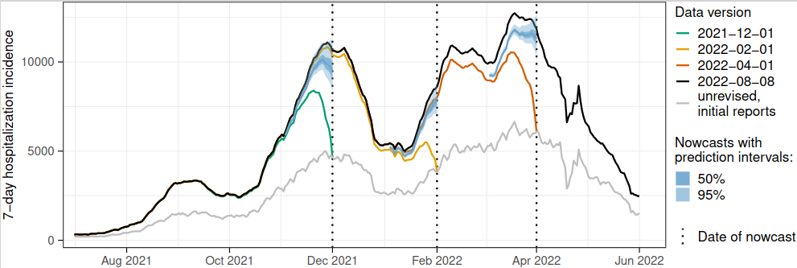
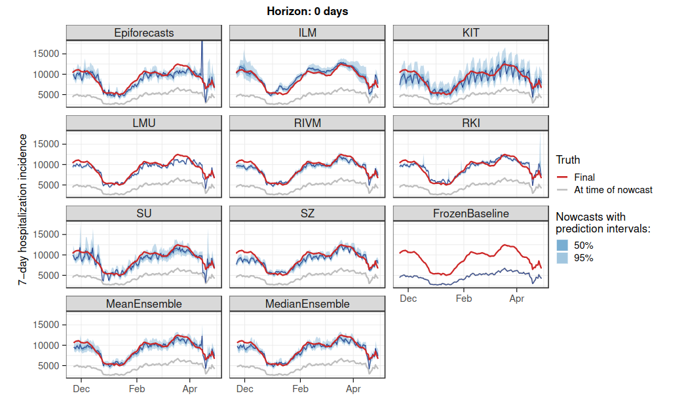

Lessons learned from collaborative nowcasting of COVID-19 hospitalizations in Germany
![]()
This blog post is based on a preprint we recently posted with a large authorship group. I will summarize my main takeaways from the project. The figures used here are all by Daniel Wolffram, the first author of the preprint (and a ggplot wizard). The paper is in turn based on a collaborative nowcasting platform we have been running since late 2021.
The indicator and the challenge
During the COVID-19 pandemic, epidemiological indicators have become part of our everyday life. Early on, deaths were the only reliable measure in many places. Then, for a long time, we were staring at case numbers, and later measures of healthcare burden became central. In Germany, where I work, the 7-day COVID-19 hospitalization incidence became a central indicator in Fall 2021 (with thresholds linked to levels of non-pharmaceutical interventions). However, this indicator has its peculiarities and quickly prompted some public debate (see e.g., this automatic translation of a German-language news item). One difficulty (I’ll gloss over a few other questions) is its timeliness. The issue arises from its very definition: the 7-day hopitalization incidence is (roughly speaking) the number of people who were reported to have a positive COVID-19 test during said 7-day period and later, and not necessarily during the same 7 days, got admitted to hospital. So hospitalizations are counted by when a positive test rather than when the actual hospitalization was reported. This way, in addition to the classical reporting delay, a second delay is baked into the indicator - the time it takes from a positive test to hospitalization. As a consequence, it can take a really long time until data are finally complete. Especially recent values are biased downwards and one can easily get the impression of a downward trend where there isn’t actually one. We therefore figured that statistical nowcasting - predicting what the numbers will look like once all data are complete - was a really relevant task here.

The collaborative format
If you are in the epidemic modelling sphere, you may have come across the various COVID-19 Forecast Hubs which bring together epidemiological predictions from various models, systematically compare them and merge them into so-called ensembles. While one conclusion from these efforts is that predicting COVID-19 is really hard, a more positive finding is that combining different models can somewhat enhance performance (see e.g., here and here). When the political decision was taken to make the 7-day hospitalization incidence the main pandemic indicator in Germany, we figured it was an interesting setting to apply this approach to nowcasting. Specifically, we had two goals:
- While Robert Koch Institute, the German Federal Public Health Institute, was showing figures of nowcasts in its weekly reports, no operational and re-usable nowcasts were available to be displayed along with real-time data.
- When first looking into the problem, we realized that there was a large number of nowcasting methods, but little was known about their actual real-time behaviour nor their relative performance. Also, nobody had tried to combine several nowcasting models into an ensemble nowcast.
We therefore reached out to a few people we knew were working on related topics and set up a GitHub repository with pre-processed data as well as a visualization dashboard to make their contribution as easy as possible. People got on board astonishingly quickly and a few days later we had several nowcasting models up and running, and posted a study protocol for our methods comparison.
The lessons
If you are interested in the detailed results our preprint has you covered. I’ll just say a few words about my main learnings:
- Reassuringly, all models we considered were doing something reasonable (see figure), and most of the time they were able to give a realistic idea of current trends. Every now and then, nowcasts were also considerably off. Typically, that happened when reporting practices changed, and most models were affected in a similar manner.
- One of the main challenges was to get weekday effects under control (there are two of them - one for the date of positive test, one for the date of hospitalization). Our purposefully simple “reference model” KIT does not take this aspect into account and consequently looks like an ill-calibrated cardiogram.

- Uncertainty quantification turned out to be tricky. Almost none of the models issued prediction intervals reaching nominal coverage levels. One important learning was that purely model-based uncertainty quantification (like your model’s predictive posterior distribution) does not work all that well in practice. Two approaches which looked at errors of past nowcasts fared much better (sort of poor man’s versions of conformal prediction).
- Defining a nowcasting target is not as trivial as it seems. We somewhat naively defined it as “the final version of the time series”, which in practice we assumed would be available 100 days after the last day for which we generated nowcasts. However, it turned out that the data were still changing after these 100 days. Only slightly, but enough to have an impact on results. Looking back, rather than using the data version available on a specified date, a better idea might have been to define the target as all hospitalizations reported with a maximum delay of, say, 40 days.
- As in similar previous projects, combined emsemble predictions showed promising results. On our pre-specified original target, they actually came in second and were beaten quite clearly by one of the individual models. That, however, seemed to be due to a peculiar overlay of a few different biases working in different directions (it’s a long discussion, check out the paper). Personally I am optimistic that across different settings there is something to be gained from ensemble nowcasts.
How nowcasts have been used
Given the sudden prominence of the 7-day hospitalization incidence in the management of the pandemic in Germany, in fall and winter 2021 there was considerable interest in the nowcasts we made available. Many media outlets are now winding down their COVID dashboards, but e.g., at newspaper Die Zeit and public broadcaster NDR, the nowcasts are still routinely displayed in May 2023. Following some very productive exchange with colleagues from Robert Koch Institute, our platform has also been referred to in their weekly reports (accompanying their own nowcasts).
An interesting aspect in the exchange with data journalists was that they were sort of hesitant to use the ensemble nowcast. After all, it was based on a difficult-to-understand mix of methods, some of which not yet formally peer-reviewed. Understandably, for them it made sense to have one specific method to point to, published in a journal of known reputation. A positive experience was that at least some media outlets took care to communicate the uncertainty associated with nowcasts explicitly.
The aftermath
Our multi-model nowcasting system is still up and running. As it requires close to no human intervention at this stage (apart from fixing occasional data hiccups), we will likely maintain it until the data source is wound down. There are also a few follow up projects, like the RESPINOW project on other relevant respiratory pathogens, and the epinowcast community on real-time analysis of infectious disease data (if you are reading this blog post, you likely already know epinowcast, but it’s great and you should definitely check out the ways of getting involved).
To conclude I’ll mention that I am currettly hiring for a Research Associate / PhD student position (also check this thread on Twitter). Please reach out to me if you are interested in real-time analysis of epidemiological data!
For a discussion of this work see our community forum (here).